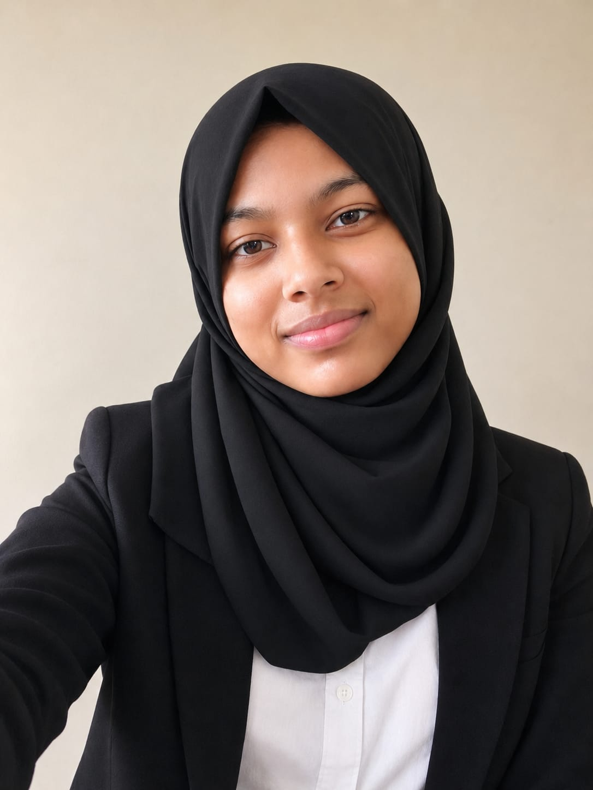

Programming
Python · SQL · JavaScript . DSA
B.E. COMPUTER SCIENCE & ENGINEERING · 3RD YEAR
Hi, I'm Fahima A
B.E. CSE Student | Python | IoT | Web & App Development | MySQL | Exploring Emerging Technologies | Data Analyst & Data Scientist Enthusiast
Passionate about building practical web, app, and IoT solutions while exploring emerging technologies and turning ideas into real-world applications.

ABOUT ME
I am a 3rd-year Computer Science and Engineering student with a strong interest in web development, mobile apps, IoT, and emerging technologies.
I enjoy turning ideas into practical projects that connect software with real-world use. My work ranges from sensor-based Arduino systems to web applications for communication and practical laboratory learning.
I am continuously learning, experimenting, and looking for opportunities where I can build useful technology and grow through real projects.
Let's connect ↗SKILLS
My strongest interests sit at the intersection of software, connected devices and practical user experiences.
Python · SQL · JavaScript . DSA
HTML · CSS · JavaScript · Flask · Frontend Development · Web Application Development
Flutter · Mobile App Development
IoT · Arduino UNO · Arduino IDE · Sensor-Based Systems · ThingSpeak · Python-based IoT Applications
SQL · SQLite · Canva · Figma · Photoshop · PowerPoint · UI Design
Streamlit (basic familiarity)
SELECTED WORK
From connected hardware to accessibility-focused web applications, these projects reflect how I like to learn: build it, test it, improve it.
05 PROJECTSISL-based Communication Web Application using Indian Sign Language data, webcam input, single-word recognition and speech output.
Practical lab platform where students follow projects, record work, take coded exams and receive instructor results.
Automatic smart dustbin prototype using ultrasonic sensing, Arduino UNO and a servo motor.
Sensor-based system that monitors soil moisture and displays collected data through ThingSpeak.
DHT11-based monitoring system using Arduino UNO, Python and Wi-Fi, accessible from a mobile or laptop browser.
JOURNEY
PSNA College of Engineering and Technology · GPA 8.43/10
Queenathon — 1st Prize · E-Horizon 2K26 — 2nd Prize · Design Decode — 1st Prize · Paper Presentation — 3rd Prize
Club Coordinator & Technical Team · AV presentations and annual magazine design
8-hour hackathon · Dhaanish Ahmed Institute of Technology
Kongu Engineering College
CSEUTSAV'26 · PSNA CET
Tamil Mandram Club · PSNACET
₹3,000 cash prize
Selected · Smart India Hackathon pathway
“I enjoy learning by building — especially when a project can turn an idea into something people can actually use.”
FAHIMA A · COMPUTER SCIENCE & ENGINEERING06 · CONTACT
Have a project idea, opportunity, or simply want to connect? I'd be happy to hear from you.